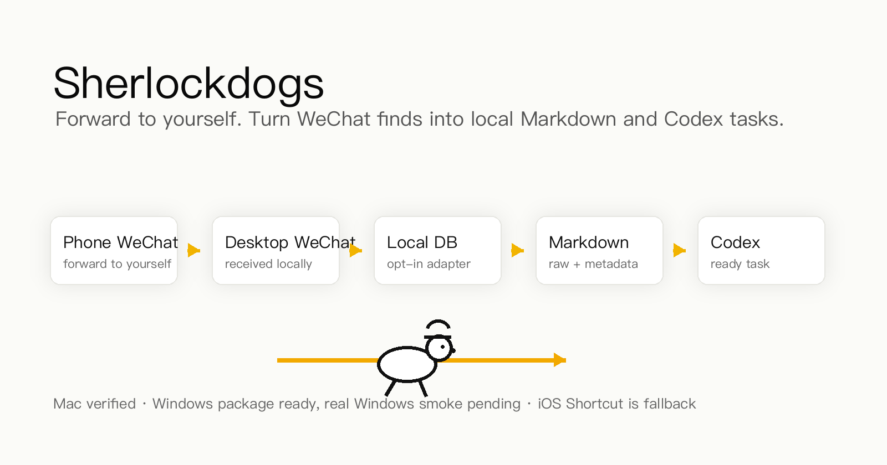

多平台收藏，
直接进 Codex
直接进 Codex
手机转发 / 电脑微信 / 网页链接，先落成本地任务包，再交给 Codex。
Send from mobile, desktop WeChat, or web links. Sherlockdogs turns them into local context for Codex.
入 支持入口 / Sources

微信WeChat articles
网页Web links

XPosts / threads

小红书Notes / images

B 站Bilibili links

YouTubeVideo links

抖音Douyin links

iOSShare sheet
出 输出到本地 / Output

Markdownraw + metadata

Obsidianlocal vault
>_
Codex 任务Codex-ready task
本地处理